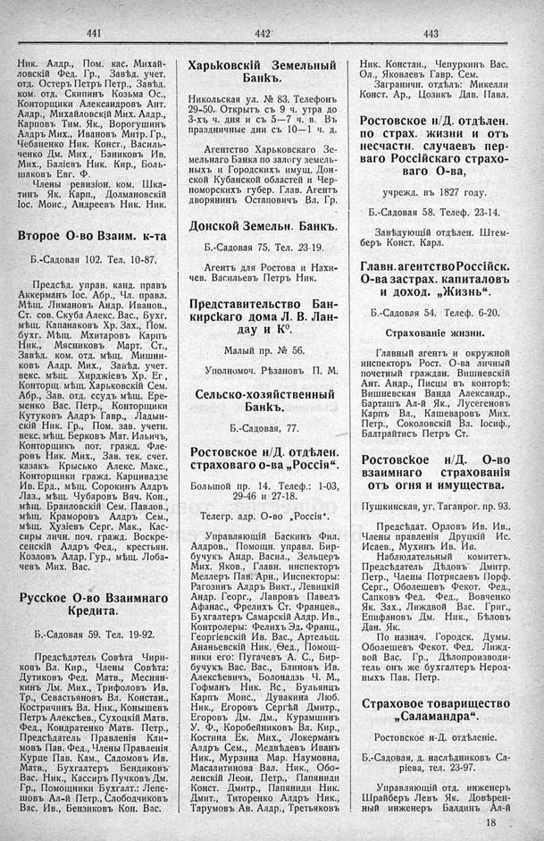

Лист источника 279
Скан

Распознанный текст
441
Ник. Алдр., Пом. кас. Михай-
ловскій Фед. Гр., Завѣд. учет.
отд. Остеръ Петръ Петр., Завѣд.
ком. отд. Скипинъ Козьма Ос.,
Конторщики Александровъ Ант.
Алдр., Михайловскій Мих. Алдр.,
Карповъ Тим. Як., Ворогушинъ
Алдръ Мих., Ивановъ Митр. Гр.,
Чебаненко Ник. Конст., Василь-
ченко Дм. Мих., Баниковъ Ив.
Мих., Баліевъ Ник. Кир., Боль-
шаковъ Евг. Ф.
Члены ревизіон. ком. Шка-
тинъ Як. Карп., Долмановскій
Іос. Моис., Андреевъ Ник. Ник.
Второе О-во Взаим. к-та
Б.-Садовая 102. Тел. 10-87.
Предсѣд. управ. канд. правъ
Аккерманъ Іос. Абр., Чл. правл.
Мѣщ. Лимановъ Андр. Иванов.,
Ст. сов. Скуба Алекс. Вас., Бухг.
мѣщ. Капанаковъ Хр. Зах., Пом.
бухг. Мѣщ. Мхитаровъ Карпъ
Ник., Мясниковъ Март. Ст.,
Завѣд. ком. отд. мѣщ. Мишни-
ковъ Алдр. Мих., Завѣд. учет.
векс. мѣщ. Хирджіевъ Хр. Ег.,
Конторщ. мѣщ. Харьковскій Сем.
Абр., Зав. отд. ссудъ мѣщ. Ере-
менко Вас. Петр., Конторщики
Кутуковъ Алдръ Гавр., Ладын-
скій Ник. Гр., Пом. зав. учетн.
векс. мѣщ. Берковъ Мат. Ильичъ,
Конторщикъ пот. гражд. Фле-
ровъ Ник. Мих., Зав. тек. счет.
казакъ Крысько Алекс. Макс.,
Конторщики гражд. Карцивадзе
Ив. Ерд., мѣщ. Сорокинъ Алдръ
Лаз., мѣщ. Чубаровъ Вяч. Кон.,
мѣщ. Браиловскій Сем. Павлов.,
мѣщ. Краморовъ Алдръ Сем.,
мѣщ. Хузiевъ Серг. Мак., Кас-
сиры личн. поч. гражд. Воскре-
сенскій Алдръ Фед., крестьян.
Козловъ Алдр. Гур., мѣщ. Лоба-
чевъ Мих. Вас.
Русское О-во Взаимнаго
Кредита.
Б.-Садовая 59. Тел. 19-92.
Предсѣдатель Совѣта Чири-
ковъ Вл. Кир., Члены Совѣта:
Дутиковъ Фед. Матв., Меснян-
кинъ Дм. Мих., Трифоловъ Ив.
Тр., Севастьяновъ Вл. Констан.,
Костричинъ Вл. Ник., Конышевъ
Петръ Алексѣев., Сухоцкій Матв.
Фед., Кондратенко Матв. Петр.,
Предсѣдатель Правленія Кли-
мовъ Пав. Фед., Члены Правленія
Курце Пав. Кам., Садомовъ Ив.
Матв., Бухгалтеръ Бендиковъ
Вас. Ник., Кассиръ Пучковъ Дм.
Гр., Помощники Бухгалт.: Лепе-
шовъ Ал-й Петр., Слободчиковъ
Вас. Ив., Бензиковъ Кон. Вас.
442
Харьковскій Земельный
Банкъ.
Никольская ул. № 83. Телефонъ
29-50. Открытъ съ 9 ч. утра до
3-хъ ч. дня и съ 5—7 ч. в. Въ
праздничные дни съ 10—1 ч. д.
Агентство Харьковскаго Зе-
мельнаго Банка по залогу земель-
ныхъ и Городскихъ имущ. Дон-
ской Кубанской областей и Чер-
номорскихъ губер. Глав. Агентъ
дворянинъ Остаповичъ Вл. Гр.
Донской Земельн. Банкъ.
Б.-Садовая 75. Тел. 23-19.
Агентъ для Ростова и Нахи-
чев. Васильевъ Петръ Ник.
Представительство Бан-
кирскаго дома Л. В. Лан-
дау и К°.
Малый пр. № 56.
Уполномоч. Рѣзановъ П. М.
Сельско-хозяйственный
Банкъ.
Б.-Садовая, 77.
Ростовское н/Д. отдѣлен.
страховаго о-ва „Россія“.
Большой пр. 14. Телеф.: 1-03,
29-46 и 27-18.
Телегр. адр. О-во „Россія“.
Управляющій Баскинъ Фил.
Алдров., Помощн. управл. Бир-
бучукъ Андр. Васил., Зельцеръ
Мих. Яков., Главн. инспекторъ
Меллеръ Пав. Арн., Инспекторы:
Рагозинъ Алдръ Викт., Левицкій
Андр. Георг., Лавровъ Павелъ
Афанас., Фрелихъ Ст. Францев.,
Бухгалтеръ Самарскій Алдр. Ив.,
Контролеры: Фелихъ Эд. Франц.,
Георгіевскій Ив. Вас., Артельщ.
Ананьевскій Ник. Ѳед., Помощ-
ники его: Пугачевъ А. С., Бир-
бучукъ Вас. Вас., Блиновъ Ив.
Алексѣевичъ, Болонадзъ Ч. М.,
Гофманъ Ник. Вс., Бульянцъ
Карпъ Моис., Дувакина Люб.
Ник., Егоровъ Сергѣй Дмитр.,
Егоровъ Дм. Дм., Курамшинъ
У. Ф., Коробейниковъ Вл. Кир.,
Костина Ек. Мих., Локерманъ
Алдръ Сем., Медвѣдевъ Иванъ
Ник., Мурзина Мар. Наумовна,
Масалитинова Вал. Ник., Обо-
ленскій Леон. Петр., Папяниди
Конст. Дмитр., Папяниди Ник.
Дмит., Титоренко Алдръ Ник.,
Тарумовъ Ав. Алдр., Третьяковъ
443
Ник. Констан., Чепуркинъ Вас.
Ол., Яковлевъ Гавр. Сем.
Заграничн. отдѣлъ: Микелли
Конст. Ар., Цозикъ Дав. Павл.
Ростовское н/Д. отдѣлен.
по страх. жизни и отъ
несчастн. случаевъ пер-
ваго Россійскаго страхо-
ваго О-ва,
учрежд. въ 1827 году.
Б.-Садовая 58. Телеф. 23-14.
Завѣдующій отдѣлен. Штем-
беръ Конст. Карл.
Главн. агентство Россійск.
О-ва застрах. капиталовъ
и доход. „Жизнь“.
Б.-Садовая 54. Телеф. 6-20.
Страхованіе жизни.
Главный агентъ и окружной
инспекторъ Рост. О-ва личный
почетный граждан. Вишневскій
Ант. Андр., Писцы въ конторѣ:
Вишневская Ванда Александр.,
Барташъ Ал-й Як., Лусегеновъ
Карпъ Вл., Кашеваровъ Мих.
Петр., Соколовскій Вл. Іосиф.,
Балтрайтисъ Петръ Ст.
Ростовское н/Д. О-во
взаимнаго страхованія
отъ огня и имущества.
Пушкинская, уг. Таганрог. пр. 93.
Предсѣдат. Орловъ Ив. Ив.,
Члены правленія Друцкій Ис.
Исаев., Мухинъ Ив. Ив.
Наблюдательный комитетъ.
Предсѣдатель Дѣдовъ Дмитр.
Петр., Члены Потрясаевъ Порф.
Серг., Оболешевъ Фекот. Фед.,
Сапковъ Фед. Фед., Вовченко
Як. Зах., Лиждвой Вас. Григ.,
Епифановъ Дм. Ник., Бѣловъ
Дан. Як.
По назнач. Городск. Думы.
Оболешевъ Фекот. Фед. Лижд-
вой Вас. Гр., Дѣлопроизводи-
тель онъ же бухгалтеръ Нерод-
ныхъ Пав. Петр.
Страховое товарищество
„Саламандра“.
Ростовское н-Д. отдѣленіе.
Б.-Садовая, д. наслѣдниковъ Са-
ріева, тел. 23-97.
Управляющій отд. инженеръ
Шрайберъ Левъ Як. Довѣрен-
ный инженеръ Балдинъ Ал-й
18